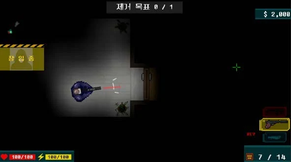

첫 미사일이 나타날 때 화면이 멈칫했습니다.
직접 플레이하며 발사 순간을 짚었습니다. 처음 쓰는 미사일과 화염을 미리 준비해 보자고 제안했습니다.
대표작 / Unity · C# 개인 프로젝트

미사일로 행성을 지키는 2D 디펜스 로그라이트
첫 발사에서 끊김을 발견했습니다.
플레이 중 포착한 순간을 다시 확인하려고 미사일과 화염의 워밍업 비교를 요청했습니다. 결과를 보고 풀링할 전투 오브젝트를 골랐습니다.
Asteroid Alert / 전투 성능
직접 플레이하며 발사 순간을 짚었습니다. 처음 쓰는 미사일과 화염을 미리 준비해 보자고 제안했습니다.
매번 게임을 새로 실행해 첫 발사를 측정하도록 요청했습니다. 프레임 간격의 측정 범위가 겹쳐, 워밍업 효과를 단정하기 어려웠습니다.
미사일·화염·조준 표식·위성 탄환을 풀링하도록 요청했습니다. HUD 아이콘은 제외했습니다.
워밍업을 켠 뒤에도
약 14배첫 발사 함수가 후속 발사보다
더 오래 CPU를 사용했습니다.
김혜현 · 문제 발견, 비교 요청, 풀링 대상 선정
Codex · 구현 및 측정 검수
같은 Windows x64 Development 빌드에서 미사일·화염 워밍업만 바꿨습니다. 첫 발사와 다음 다섯 프레임 중 가장 긴 간격을 기록했습니다. 후속 발사 CPU 시간은 각 실행에서 이어 쏜 다섯 발의 중앙값으로 비교했습니다.
| 측정 항목 | 워밍업 끔 | 워밍업 켬 |
|---|---|---|
| 첫 발사 함수 CPU 시간 | 11.35 ms | 10.98 ms |
| 첫 발사 구간 최대 프레임 간격 | 13.75 ms | 12.87 ms |
최대 프레임 간격의 측정 범위는 끔 12.77–14.92 ms, 켬 11.10–15.31 ms였습니다. 이 결과만으로 일관된 개선 폭을 확정하기 어려웠습니다.
별도 풀링 검사 · Unity Editor에서 준비된 피격·폭발·먼지 이펙트 재생을 32회 호출했을 때 호출 스레드의 관리 메모리 할당은 0바이트였습니다. 최종 풀링 적용 후의 첫 발사 속도 개선 폭은 미확정입니다.

벽 뒤 총성을 적이 어떻게 들을지 구현했습니다. 직선과 NavMesh 우회 경로에서 각각 감쇠한 소리를 비교해 적이 수색하거나 교전하도록 했습니다.

게임 프로그래밍을 맡아 손으로 그린 문양을 주문에 연결했습니다. 손을 떼었다가 다음 획을 그어도 하나의 마법으로 인식하도록 입력 방식을 확장했습니다.
2026.07–08 개발 기록 기준. 2D 생존 슈팅에서 조준·재장전, 아이템 퀵슬롯·장착, 플레이어와 월드 상태 저장에 필요한 동작과 수정 방향을 Codex에 전달했습니다.